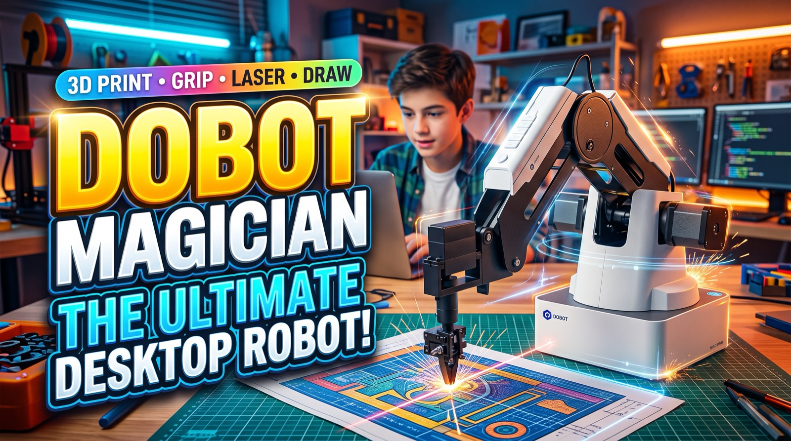

DOBOT Magician
Industrial precision, brought down to the size of a desk.
Imagine the precision of a high-tech factory packed inside a sleek desktop robotic arm. That is the DOBOT Magician: a friendly powerhouse engineered to turn imagination into something you can hold.
Designed to inspire curious minds of all ages, the Magician closes the gap between an everyday idea and advanced robotics. Change its head and it changes its trade — from a delicate artist sketching in pen to an industrial worker engraving, lifting and sorting.
- The ultimate multi-tasker
- Interchangeable tool heads turn one arm into many: it 3D prints, draws intricate sketches with a pen, cuts with a laser engraver, and sorts objects using vacuum suction cups and mechanical grippers.
- Gentle and ultra-precise
- It returns to the same point within a fraction of a millimetre, performing delicate work with surgical accuracy — the principles of real smart manufacturing, running on a tabletop.
- Friendly for everyone
- A child meeting robotics for the first time, a student learning drag-and-drop programming, and an engineer coding complex automation routines all drive the same arm.
It is not just a robot on a desk. It is a launchpad for tomorrow’s makers, thinkers and innovators.